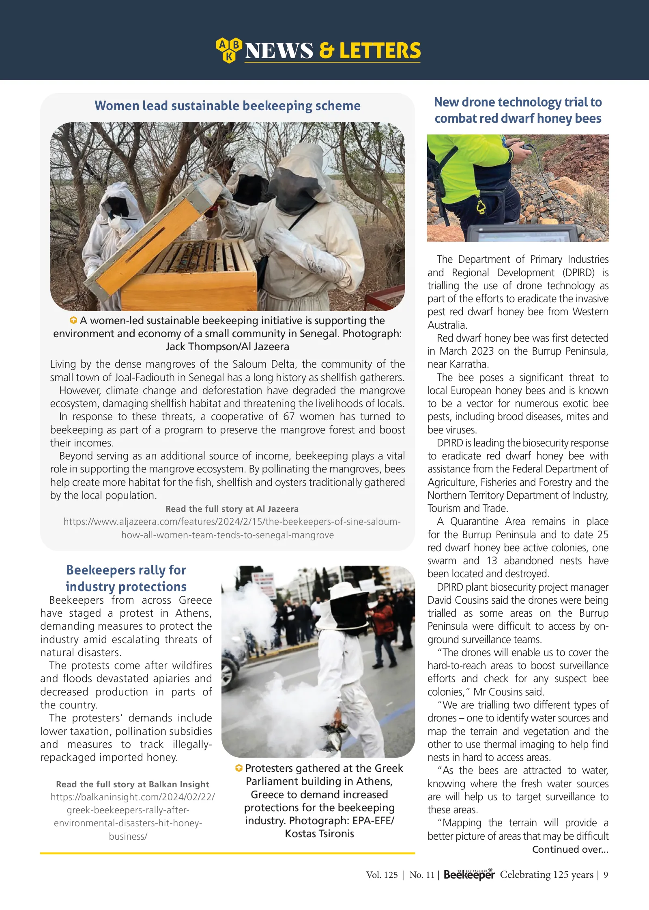

NEWS & LETTERS
New drone technology trial to
combat red dwarf honey bees
The Department of Primary Industries
and Regional Development (DPIRD) is
trialling the use of drone technology as
part of the efforts to eradicate the invasive
pest red dwarf honey bee from Western
Australia.
Red dwarf honey bee was first detected
in March 2023 on the Burrup Peninsula,
near Karratha.
The bee poses a significant threat to
local European honey bees and is known
to be a vector for numerous exotic bee
pests, including brood diseases, mites and
bee viruses.
DPIRD is leading the biosecurity response
to eradicate red dwarf honey bee with
assistance from the Federal Department of
Agriculture, Fisheries and Forestry and the
Northern Territory Department of Industry,
Tourism and Trade.
A Quarantine Area remains in place
for the Burrup Peninsula and to date 25
red dwarf honey bee active colonies, one
swarm and 13 abandoned nests have
been located and destroyed.
DPIRD plant biosecurity project manager
David Cousins said the drones were being
trialled as some areas on the Burrup
Peninsula were difficult to access by on-
ground surveillance teams.
“The drones will enable us to cover the
hard-to-reach areas to boost surveillance
efforts and check for any suspect bee
colonies,” Mr Cousins said.
“We are trialling two different types of
drones – one to identify water sources and
map the terrain and vegetation and the
other to use thermal imaging to help find
nests in hard to access areas.
“As the bees are attracted to water,
knowing where the fresh water sources
are will help us to target surveillance to
these areas.
“Mapping the terrain will provide a
better picture of areas that may be difficult
Protesters gathered at the Greek
Parliament building in Athens,
Greece to demand increased
protections for the beekeeping
industry. Photograph: EPA-EFE/
Kostas Tsironis
Continued over...
Women lead sustainable beekeeping scheme
Beekeepers rally for
industry protections
Beekeepers from across Greece
have staged a protest in Athens,
demanding measures to protect the
industry amid escalating threats of
natural disasters.
The protests come after wildfires
and floods devastated apiaries and
decreased production in parts of
the country.
The protesters’ demands include
lower taxation, pollination subsidies
and measures to track illegally-
repackaged imported honey.
Read the full story at Balkan Insight
https://balkaninsight.com/2024/02/22/
greek-beekeepers-rally-after-
environmental-disasters-hit-honey-
business/
Living by the dense mangroves of the Saloum Delta, the community of the
small town of Joal-Fadiouth in Senegal has a long history as shellfish gatherers.
However, climate change and deforestation have degraded the mangrove
ecosystem, damaging shellfish habitat and threatening the livelihoods of locals.
In response to these threats, a cooperative of 67 women has turned to
beekeeping as part of a program to preserve the mangrove forest and boost
their incomes.
Beyond serving as an additional source of income, beekeeping plays a vital
role in supporting the mangrove ecosystem. By pollinating the mangroves, bees
help create more habitat for the fish, shellfish and oysters traditionally gathered
by the local population.
Read the full story at Al Jazeera
https://www.aljazeera.com/features/2024/2/15/the-beekeepers-of-sine-saloum-
how-all-women-team-tends-to-senegal-mangrove
A women-led sustainable beekeeping initiative is supporting the
environment and economy of a small community in Senegal. Photograph:
Jack Thompson/Al Jazeera
Vol. 125 | No. 11 |
Celebrating 125 years | 9